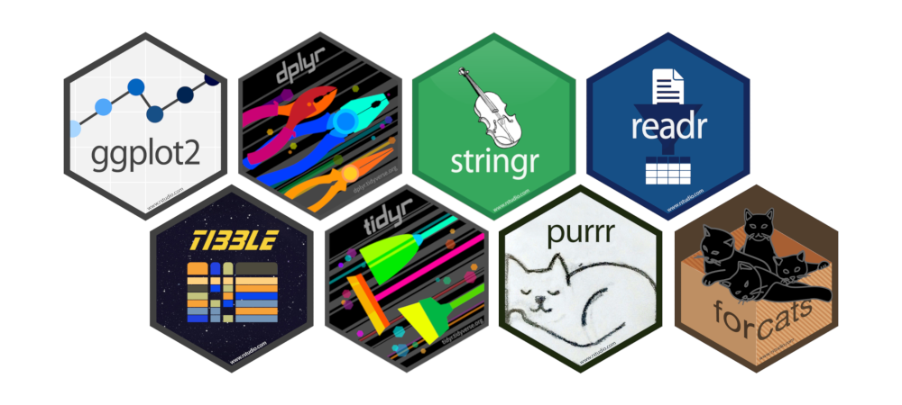

install.packages("tidyverse")Traitement de données avec R
1 Le tidyverse
Le terme tidyverse est une contraction de tidy (qu’on pourrait traduire par “bien rangé”) et de universe. Il s’agit en fait d’une collection d’extensions conçues pour travailler ensemble et basées sur une philosophie commune.
Elles abordent un très grand nombre d’opérations courantes dans R (la liste n’est pas exhaustive) :
- visualisation
- manipulation des tableaux de données
- import/export de données
- manipulation de variables
- extraction de données du Web
- programmation
Un des objectifs de ces extensions est de fournir des fonctions avec une syntaxe cohérente, qui fonctionnent bien ensemble, et qui retournent des résultats prévisibles. Elles sont en grande partie issues du travail d’Hadley Wickham, qui travaille désormais pour RStudio.
1.1 Installation
tidyverse est également le nom d’une extension qu’on peut installer de manière classique, soit via le bouton Install de l’onglet Packages de RStudio, soit en utilisant la commande :
Note
Normalement vous devriez déjà avoir fait cette installation lors de la partie précédente.
Cette commande va en fait installer plusieurs extensions qui constituent le “coeur” du tidyverse, à savoir :
ggplot2(visualisation)dplyr(manipulation des données)tidyr(remise en forme des données)purrr(programmation)readr(importation de données)tibble(tableaux de données)forcats(variables qualitatives)stringr(chaînes de caractères)lubridate(manipulation de dates)

De la même manière, charger l’extension avec :
library(tidyverse)── Attaching core tidyverse packages ──────────────────────── tidyverse 2.0.0 ──
✔ dplyr 1.1.4 ✔ readr 2.1.5
✔ forcats 1.0.0 ✔ stringr 1.5.1
✔ ggplot2 3.5.0 ✔ tibble 3.2.1
✔ lubridate 1.9.3 ✔ tidyr 1.3.1
✔ purrr 1.0.2
── Conflicts ────────────────────────────────────────── tidyverse_conflicts() ──
✖ dplyr::filter() masks stats::filter()
✖ dplyr::lag() masks stats::lag()
ℹ Use the conflicted package (<http://conflicted.r-lib.org/>) to force all conflicts to become errorsChargera l’ensemble des extensions précédentes. Elles peuvent également être chargées indépendamment.
Il existe d’autres extensions qui font partie du tidyverse mais qui doivent être chargées explicitement, comme par exemple readxl (pour l’importation de données depuis des fichiers Excel). La liste complète se trouve sur le site officiel du tidyverse.
2 Importer et exporter des données
R n’est pas prévu pour la saisie de données, mais il bénéficie de nombreuses fonctions et packages permettant l’import de données depuis un grand nombre de formats, notamment les fichier de type CSV et les fichiers Excel.
Il est très vivement conseillé de travailler avec les projets de RStudio pour faciliter l’accès aux fichiers et pouvoir regrouper l’ensemble des éléments d’une analyse dans un dossier.
Note
Les projets permettent notamment de ne pas avoir à spécifier un chemin complet vers un fichier (sous Windows, quelque chose du genre C:\\Users\\tim\\Documents\\projet\\data\\donnees.xlsx) mais un chemin relatif au dossier du projet (juste donnees.xls si le fichier se trouve à la racine du projet, data/donnees.xls s’il se trouve dans un sous-dossier data, etc.)
2.1 Import de fichiers textes
L’extension readr, qui fait partie du tidyverse, permet l’importation de fichiers texte, notamment au format CSV (Comma separated values), format standard pour l’échange de données tabulaires entre logiciels.
Cette extension fait partie du “coeur” du tidyverse, elle est donc automatiquement chargée avec :
library(tidyverse)Si votre fichier CSV suit un format CSV standard (c’est le cas s’il a été exporté depuis LibreOffice par exemple), avec des champs séparés par des virgules, vous pouvez utiliser la fonction read_csv en lui passant en argument le nom du fichier :
d <- read_csv("fichier.csv")
Note
Ici, nous avons indiquer un nom de fichier générique qui n’est pas fournit. Ici, le fichier StarWars_Characters.csv a été placé dans un dossier data qui se trouve dans le même dossier que votre script R !
Si votre fichier vient d’Excel, avec des valeurs séparées par des points virgule, utilisez la fonction read_csv2 :
d <- read_csv2("fichier.csv")Dans la même famille de fonction, read_tsv permet d’importer des fichiers dont les valeurs sont séparées par des tabulations, et read_delim des fichiers délimités par un séparateur indiqué en argument.
Chaque fonction dispose de plusieurs arguments, parmi lesquels :
col_namesindique si la première ligne contient le nom des colonnes (TRUEpar défaut)col_typespermet de spécifier manuellement le type des colonnes sireadrne les identifie pas correctementnaest un vecteur de chaînes de caractères indiquant les valeurs devant être considérées comme manquantes. Ce vecteur vautc("", "NA")par défaut
Il peut arriver, notamment sous Windows, que l’encodage des caractères accentués ne soit pas correct au moment de l’importation. On peut alors spécifier manuellement l’encodage du fichier importé à l’aide de l’option locale. Par exemple, si l’on est sous Mac ou Linux et que le fichier a été créé sous Windows, il est possible qu’il soit encodé au format iso-8859-1. On peut alors l’importer avec :
d <- read_csv("fichier.csv", locale = locale(encoding = "ISO-8859-1"))À l’inverse, si vous importez un fichier sous Windows et que les accents ne sont pas affichés correctement, il est sans doute encodé en UTF-8 :
d <- read_csv("fichier.csv", locale = locale(encoding = "UTF-8"))Pour plus d’informations sur ces fonctions, voir le site de l’extension readr.
Note
À noter que si vous souhaitez importer des fichiers textes très volumineux le plus rapidement possible, la fonction fread de l’extension data.table est plus rapide que read_csv.
2.2 Import depuis un fichier Excel
L’extension readxl, qui fait également partie du tidyverse, permet d’importer des données directement depuis un fichier au format xlsou xlsx.
Elle ne fait pas partie du “coeur” du tidyverse, il faut donc la charger explicitement avec :
library(readxl)On peut alors utiliser la fonction read_excel en lui spécifiant le nom du fichier :
d <- read_excel("fichier.xls")Il est possible de spécifier la feuille et la plage de cellules que l’on souhaite importer avec les arguments sheet et range :
d <- read_excel("fichier.xls", sheet = "Feuille2", range = "C1:F124")Pour plus d’informations, voir le site de l’extension readxl.
2.3 Exercice 1
Importez les données présentes dans les fichiers StarWars_characters.csv et celles présentes dans la feuille character du fichier StarWars.xlsx
3 Les tableaux dans R
Par défaut, les tableaux dans R sont appelés de Data Frames (data.frame), dans lesquels on peut spécifier des lignes et des colonnes. La pluspart des packages pour la science des données travaillent avec des data frames. Par exemple, les jeux de données présents par défaut dans R sont des data frames, ici
is.data.frame(mtcars)[1] TRUEUne autre particularité du tidyverse est que ces packages travaillent avec des tableaux de données au format tibble, qui est une évolution plus moderne du classique data frame du R de base. Ce format est fourni et géré par l’extension du même nom (tibble), qui fait partie du coeur du tidyverse. La plupart des fonctions des extensions du tidyverse acceptent des data frames en entrée, mais retournent un objet de classe tibble.
Contrairement aux data frames, les tibbles :
- n’ont pas de noms de lignes (rownames)
- autorisent des noms de colonnes invalides pour les data frames (espaces, caractères spéciaux, nombres…)1
- s’affichent plus intelligemment que les data frames : seules les premières lignes sont affichées, ainsi que quelques informations supplémentaires utiles (dimensions, types des colonnes…)
- ne font pas de partial matching sur les noms de colonnes2
- affichent un avertissement si on essaie d’accéder à une colonne qui n’existe pas
Pour autant, les tibbles restent compatibles avec les data frames. On peut ainsi facilement convertir un data frame en tibble avec as_tibble :
as_tibble(mtcars)# A tibble: 32 × 11
mpg cyl disp hp drat wt qsec vs am gear carb
<dbl> <dbl> <dbl> <dbl> <dbl> <dbl> <dbl> <dbl> <dbl> <dbl> <dbl>
1 21 6 160 110 3.9 2.62 16.5 0 1 4 4
2 21 6 160 110 3.9 2.88 17.0 0 1 4 4
3 22.8 4 108 93 3.85 2.32 18.6 1 1 4 1
4 21.4 6 258 110 3.08 3.22 19.4 1 0 3 1
5 18.7 8 360 175 3.15 3.44 17.0 0 0 3 2
6 18.1 6 225 105 2.76 3.46 20.2 1 0 3 1
7 14.3 8 360 245 3.21 3.57 15.8 0 0 3 4
8 24.4 4 147. 62 3.69 3.19 20 1 0 4 2
9 22.8 4 141. 95 3.92 3.15 22.9 1 0 4 2
10 19.2 6 168. 123 3.92 3.44 18.3 1 0 4 4
# ℹ 22 more rowsIl est intéressant de noter qu’un tibble est un data frame mais que l’inverse n’est pas vrai !
is.data.frame(mtcars) #TRUE[1] TRUEis_tibble(mtcars) # FALSE[1] FALSEis.data.frame(as_tibble(mtcars)) #TRUE[1] TRUEis_tibble(as_tibble(mtcars)) #TRUE[1] TRUESi le data frame d’origine a des rownames, on peut d’abord les convertir en colonnes avec rownames_to_columns :
d <- as_tibble(rownames_to_column(mtcars))
d# A tibble: 32 × 12
rowname mpg cyl disp hp drat wt qsec vs am gear carb
<chr> <dbl> <dbl> <dbl> <dbl> <dbl> <dbl> <dbl> <dbl> <dbl> <dbl> <dbl>
1 Mazda RX4 21 6 160 110 3.9 2.62 16.5 0 1 4 4
2 Mazda RX4 … 21 6 160 110 3.9 2.88 17.0 0 1 4 4
3 Datsun 710 22.8 4 108 93 3.85 2.32 18.6 1 1 4 1
4 Hornet 4 D… 21.4 6 258 110 3.08 3.22 19.4 1 0 3 1
5 Hornet Spo… 18.7 8 360 175 3.15 3.44 17.0 0 0 3 2
6 Valiant 18.1 6 225 105 2.76 3.46 20.2 1 0 3 1
7 Duster 360 14.3 8 360 245 3.21 3.57 15.8 0 0 3 4
8 Merc 240D 24.4 4 147. 62 3.69 3.19 20 1 0 4 2
9 Merc 230 22.8 4 141. 95 3.92 3.15 22.9 1 0 4 2
10 Merc 280 19.2 6 168. 123 3.92 3.44 18.3 1 0 4 4
# ℹ 22 more rowsÀ l’inverse, on peut à tout moment convertir un tibble en data frame avec as.data.frame :
as.data.frame(d) rowname mpg cyl disp hp drat wt qsec vs am gear carb
1 Mazda RX4 21.0 6 160.0 110 3.90 2.620 16.46 0 1 4 4
2 Mazda RX4 Wag 21.0 6 160.0 110 3.90 2.875 17.02 0 1 4 4
3 Datsun 710 22.8 4 108.0 93 3.85 2.320 18.61 1 1 4 1
4 Hornet 4 Drive 21.4 6 258.0 110 3.08 3.215 19.44 1 0 3 1
5 Hornet Sportabout 18.7 8 360.0 175 3.15 3.440 17.02 0 0 3 2
6 Valiant 18.1 6 225.0 105 2.76 3.460 20.22 1 0 3 1
7 Duster 360 14.3 8 360.0 245 3.21 3.570 15.84 0 0 3 4
8 Merc 240D 24.4 4 146.7 62 3.69 3.190 20.00 1 0 4 2
9 Merc 230 22.8 4 140.8 95 3.92 3.150 22.90 1 0 4 2
10 Merc 280 19.2 6 167.6 123 3.92 3.440 18.30 1 0 4 4
11 Merc 280C 17.8 6 167.6 123 3.92 3.440 18.90 1 0 4 4
12 Merc 450SE 16.4 8 275.8 180 3.07 4.070 17.40 0 0 3 3
13 Merc 450SL 17.3 8 275.8 180 3.07 3.730 17.60 0 0 3 3
14 Merc 450SLC 15.2 8 275.8 180 3.07 3.780 18.00 0 0 3 3
15 Cadillac Fleetwood 10.4 8 472.0 205 2.93 5.250 17.98 0 0 3 4
16 Lincoln Continental 10.4 8 460.0 215 3.00 5.424 17.82 0 0 3 4
17 Chrysler Imperial 14.7 8 440.0 230 3.23 5.345 17.42 0 0 3 4
18 Fiat 128 32.4 4 78.7 66 4.08 2.200 19.47 1 1 4 1
19 Honda Civic 30.4 4 75.7 52 4.93 1.615 18.52 1 1 4 2
20 Toyota Corolla 33.9 4 71.1 65 4.22 1.835 19.90 1 1 4 1
21 Toyota Corona 21.5 4 120.1 97 3.70 2.465 20.01 1 0 3 1
22 Dodge Challenger 15.5 8 318.0 150 2.76 3.520 16.87 0 0 3 2
23 AMC Javelin 15.2 8 304.0 150 3.15 3.435 17.30 0 0 3 2
24 Camaro Z28 13.3 8 350.0 245 3.73 3.840 15.41 0 0 3 4
25 Pontiac Firebird 19.2 8 400.0 175 3.08 3.845 17.05 0 0 3 2
26 Fiat X1-9 27.3 4 79.0 66 4.08 1.935 18.90 1 1 4 1
27 Porsche 914-2 26.0 4 120.3 91 4.43 2.140 16.70 0 1 5 2
28 Lotus Europa 30.4 4 95.1 113 3.77 1.513 16.90 1 1 5 2
29 Ford Pantera L 15.8 8 351.0 264 4.22 3.170 14.50 0 1 5 4
30 Ferrari Dino 19.7 6 145.0 175 3.62 2.770 15.50 0 1 5 6
31 Maserati Bora 15.0 8 301.0 335 3.54 3.570 14.60 0 1 5 8
32 Volvo 142E 21.4 4 121.0 109 4.11 2.780 18.60 1 1 4 2Là encore, on peut convertir la colonne rowname en “vrais” rownames avec column_to_rownames :
column_to_rownames(as.data.frame(d)) mpg cyl disp hp drat wt qsec vs am gear carb
Mazda RX4 21.0 6 160.0 110 3.90 2.620 16.46 0 1 4 4
Mazda RX4 Wag 21.0 6 160.0 110 3.90 2.875 17.02 0 1 4 4
Datsun 710 22.8 4 108.0 93 3.85 2.320 18.61 1 1 4 1
Hornet 4 Drive 21.4 6 258.0 110 3.08 3.215 19.44 1 0 3 1
Hornet Sportabout 18.7 8 360.0 175 3.15 3.440 17.02 0 0 3 2
Valiant 18.1 6 225.0 105 2.76 3.460 20.22 1 0 3 1
Duster 360 14.3 8 360.0 245 3.21 3.570 15.84 0 0 3 4
Merc 240D 24.4 4 146.7 62 3.69 3.190 20.00 1 0 4 2
Merc 230 22.8 4 140.8 95 3.92 3.150 22.90 1 0 4 2
Merc 280 19.2 6 167.6 123 3.92 3.440 18.30 1 0 4 4
Merc 280C 17.8 6 167.6 123 3.92 3.440 18.90 1 0 4 4
Merc 450SE 16.4 8 275.8 180 3.07 4.070 17.40 0 0 3 3
Merc 450SL 17.3 8 275.8 180 3.07 3.730 17.60 0 0 3 3
Merc 450SLC 15.2 8 275.8 180 3.07 3.780 18.00 0 0 3 3
Cadillac Fleetwood 10.4 8 472.0 205 2.93 5.250 17.98 0 0 3 4
Lincoln Continental 10.4 8 460.0 215 3.00 5.424 17.82 0 0 3 4
Chrysler Imperial 14.7 8 440.0 230 3.23 5.345 17.42 0 0 3 4
Fiat 128 32.4 4 78.7 66 4.08 2.200 19.47 1 1 4 1
Honda Civic 30.4 4 75.7 52 4.93 1.615 18.52 1 1 4 2
Toyota Corolla 33.9 4 71.1 65 4.22 1.835 19.90 1 1 4 1
Toyota Corona 21.5 4 120.1 97 3.70 2.465 20.01 1 0 3 1
Dodge Challenger 15.5 8 318.0 150 2.76 3.520 16.87 0 0 3 2
AMC Javelin 15.2 8 304.0 150 3.15 3.435 17.30 0 0 3 2
Camaro Z28 13.3 8 350.0 245 3.73 3.840 15.41 0 0 3 4
Pontiac Firebird 19.2 8 400.0 175 3.08 3.845 17.05 0 0 3 2
Fiat X1-9 27.3 4 79.0 66 4.08 1.935 18.90 1 1 4 1
Porsche 914-2 26.0 4 120.3 91 4.43 2.140 16.70 0 1 5 2
Lotus Europa 30.4 4 95.1 113 3.77 1.513 16.90 1 1 5 2
Ford Pantera L 15.8 8 351.0 264 4.22 3.170 14.50 0 1 5 4
Ferrari Dino 19.7 6 145.0 175 3.62 2.770 15.50 0 1 5 6
Maserati Bora 15.0 8 301.0 335 3.54 3.570 14.60 0 1 5 8
Volvo 142E 21.4 4 121.0 109 4.11 2.780 18.60 1 1 4 2
Note
Les deux fonctions column_to_rownames et rownames_to_column acceptent un argument supplémentaire var qui permet d’indiquer un nom de colonne autre que le nom rowname utilisé par défaut pour créer ou identifier la colonne contenant les noms de lignes.
Normalement, vous ne devriez trop à avoir à vous soucier de la différence entre un data frame et un tibble dans le sens où la plupart des fonctions que nous allons utiliser acceptent les deux !
4 Recoder des variables
Dans cette section, nous allons nous intéresser aux types des données lues par R et à comment il est possible de faire certains changements.
4.1 Rappel sur les variables et les vecteurs
Dans R, une variable, en général une colonne d’un tableau de données, est un objet de type vecteur. Un vecteur est un ensemble d’éléments, tous du même type.
On a vu qu’on peut construire un vecteur manuellement de différentes manières :
couleur <- c("Jaune", "Jaune", "Rouge", "Vert")
nombres <- 1:10Mais le plus souvent on manipule des vecteurs faisant partie d’une table importée dans R.
Pour la suite, nous allons utiliser le jeux de données Star Wars et essayer de faire un peu de nettoyage !
sw <- read.csv("data/StarWars_characters.csv")Quand on veut accéder à un vecteur d’un tableau de données, on peut utiliser l’opérateur $ :
sw$nameLes vecteurs peuvent être de classes différentes, selon le type de données qu’ils contiennent.
On a ainsi des vecteurs de type integer ou double, qui contiennent respectivement des nombres entiers ou décimaux. Dans notre exemple, nous avons simplement une colonne de type integer :
typeof(sw$height)[1] "integer"Des vecteurs de type character, qui contiennent des chaînes de caractères :
typeof(sw$name)
head(sw$name)Et des vecteurs de type logical, qui ne peuvent contenir que les valeurs vraie (TRUE) ou fausse (FALSE).
vec <- c(TRUE, FALSE, FALSE, TRUE)
typeof(vec)[1] "logical"On peut convertir un vecteur d’un type en un autre en utilisant les fonctions as.numeric, as.character ou as.logical. Les valeurs qui n’ont pas pu être converties sont automatiquement transformées en NA.
x <- c("1", "2.35", "8.2e+03", "foo")
as.numeric(x)Warning: NAs introduits lors de la conversion automatique[1] 1.00 2.35 8200.00 NAy <- 2:6
as.character(y)[1] "2" "3" "4" "5" "6"Dans nos données, nous voyons que la colonne mass a été importée comme étant de type character alors qu’il s’agit de nombre. Cela vient probablement du fait qu’un des nombre est mal formaté. La fonction as.numeric affiche normalement un warning lorsque qu’un élément n’a pas pu être converti.
as.numeric(sw$mass)Warning: NAs introduits lors de la conversion automatique [1] 77.0 75.0 32.0 136.0 49.0 120.0 75.0 32.0 84.0 77.0 84.0 NA
[13] 112.0 80.0 74.0 NA 77.0 110.0 17.0 75.0 78.2 140.0 113.0 79.0
[25] 79.0 83.0 NA NA 20.0 68.0 89.0 90.0 NA 66.0 82.0 NA
[37] NA NA 40.0 NA NA 80.0 NA 55.0 45.0 NA 65.0 84.0
[49] 82.0 87.0 NA 50.0 NA NA 80.0 NA 85.0 NA NA 80.0
[61] 56.2 50.0 NA 80.0 NA 79.0 55.0 102.0 88.0 NA NA 15.0
[73] NA 48.0 NA 57.0 159.0 136.0 79.0 48.0 80.0 NA NA NA
[85] NA NA 45.0En allant jeter un coup d’oeil dans les données, nous voyons que la masse pour Jabba Desilijic Tiure comporte une vigule à la place d’un point pour séparer les décimales3. Nous pouvons faire un remplacement des virgules en points pour cette colonne avec la fonction gsub:
sw$mass <- gsub(",", ".", sw$mass)Nous pouvons maintenant faire notre conversion de type:
sw$mass <- as.numeric(sw$mass)4.2 Tests et comparaison
Un test est une opération logique de comparaison qui renvoie vrai (TRUE) ou faux (FALSE) pour chacun des éléments d’un vecteur.
Parmi les opérateurs de comparaison disponibles, on trouve notamment :
==qui teste l’égalité!=qui teste la différence>,<,<=,>=qui testent la supériorité ou l’infériorité%in%qui teste l’appartenance à un ensemble de valeurs
Exemple le plus simple :
2 == 3[1] FALSE2 != 3[1] TRUEExemple appliqué à un vecteur :
x <- 1:10
x < 5 [1] TRUE TRUE TRUE TRUE FALSE FALSE FALSE FALSE FALSE FALSEOn peut combiner plusieurs tests avec les opérateurs logiques et (&) et ou (|). Ainsi, si on veut tester qu’une valeur est comprise entre 3 et 6 inclus, on peut faire :
x >= 3 & x <= 6 [1] FALSE FALSE TRUE TRUE TRUE TRUE FALSE FALSE FALSE FALSESi on veut tester qu’une valeur est égale à “Bleu” ou à “Vert”, on peut faire :
vec <- c("Jaune", "Jaune", "Rouge", "Vert")
vec == "Jaune" | vec == "Vert"[1] TRUE TRUE FALSE TRUEÀ noter que dans ce cas, on peut utiliser l’opérateur %in%4, qui teste si une valeur fait partie des éléments d’un vecteur :
vec %in% c("Jaune", "Vert")[1] TRUE TRUE FALSE TRUE
Warning
Attention, si on souhaite tester si une valeur x est inconnue (ou ‘manquante’), c’est-à-dire si elle est codée NA (Not Available), faire le test x == NA ne donnera pas le résultat escompté. En effet, fidèle à sa réputation de rigueur informaticienne, pour R NA == NA ne vaut pas TRUE mais… NA (on ne sait pas si une valeur inconnue est égale à une autre valeur inconnue).
Pour tester si une valeur est inconnue (NA), il faut utiliser la fonction dédiée is.na et faire is.na(x).
Cependant, par convention, NA %in% NA vaut TRUE.
Enfin, on peut inverser un test avec l’opérateur non (!) :
!(vec %in% c("Jaune", "Vert"))[1] FALSE FALSE TRUE FALSELes tests sont notamment utilisés par le verbe filter de dplyr (que nous verrons plus loin) qui permet de sélectionner certaines lignes d’un tableau de données. On peut ainsi sélectionner les personnages de plus de 1 mètre :
filter(sw, height >= 100)Ou sélectionner les personnages ayant comme homeworld Tatooine ou Naboo :
filter(sw, homeworld %in% c("Tatooine", "Naboo"))On peut utiliser les tests pour sélectionner certains éléments d’un vecteur. Si on passe un test à l’opérateur de sélection [], seuls les éléments pour lesquels ce test est vrai seront conservés :
x <- c(12, 8, 14, 7, 6, 18)
x[x > 10][1] 12 14 18Enfin, on peut aussi utiliser les tests et la sélection pour modifier les valeurs d’un vecteur. Ainsi, si on assigne une valeur à une sélection, les éléments pour lesquels le test est vrai sont remplacés par cette valeur :
x <- c(12, 8, 14, 7, 6, 18)
x[x > 10] <- 100
x[1] 100 8 100 7 6 100En utilisant cette assignation via un test, on peut effectuer des recodages de variables. Soit le vecteur suivant :
vec <- c("Femme", "Homme", "Femme", "Garçon")Si on souhaite recoder la modalité “Garçon” en “Homme”, on peut utiliser la syntaxe suivante :
vec[vec == "Garçon"] <- "Homme"
vec[1] "Femme" "Homme" "Femme" "Homme"Cette syntaxe est tout à fait valable et couramment utilisée. On va cependant voir dans la section suivante différentes fonctions qui facilitent ces opérations de recodage.
Dans notre exemple, si nous regardons la colonne gender, nous voyons une valeur "none" qui n’a pas été comptée comme NA. D’ailleurs, tous les NA sont en faite des droids. Nous allons donc changer les NA et les "none" en "droid":
sw$gender[sw$gender == "none" | is.na(sw$gender)] <- "droid"4.3 Recoder une variable qualitative
Pour rappel, on appelle variable qualitative une variable pouvant prendre un nombre limité de modalités (de valeurs possibles).
4.3.1 Facteurs et forcats
Dans R, les variables qualitatives peuvent être de deux types : ou bien des vecteurs de type character (des chaînes de caractères), ou bien des factor (facteurs). Si vous utilisez les fonctions des extensions du tidyverse comme readr, readxl ou haven pour importer vos données, vos variables qualitatives seront importées sous forme de character. Mais dans d’autres cas elles se retrouveront parfois sous forme de factor.
Pour convertir une colonne en factors, nous pouvons utiliser la fonction as_factor:
sw$gender <- as_factor(sw$gender)Les facteurs sont un type de variable ne pouvant prendre qu’un nombre défini de modalités nommés levels.
levels(sw$gender)[1] "male" "droid" "female" "hermaphrodite"fct_count(sw$gender)# A tibble: 4 × 2
f n
<fct> <int>
1 male 62
2 droid 5
3 female 19
4 hermaphrodite 1Ceci complique les opérations de recodage car du coup l’opération suivante, qui tente de modifier une modalité de la variable, aboutit à un avertissement, et l’opération n’est pas effectuée.
sw$gender[sw$gender == "male"] <- "homme"forcats est une extension facilitant la manipulation des variables qualitatives, qu’elles soient sous forme de vecteurs character ou de facteurs. Elle fait partie du tidyverse, et est donc automatiquement chargée par :
library(tidyverse)4.3.2 Modifier les modalités d’une variable qualitative
Une opération courante consiste à modifier les valeurs d’une variable qualitative, que ce soit pour avoir des intitulés plus courts ou plus clairs ou pour regrouper des modalités entre elles.
Il existe plusieurs possibilités pour effectuer ce type de recodage, mais ici on va utiliser la fonction fct_recode de l’extension forcats. Celle-ci prend en argument une liste de recodages sous la forme "Nouvelle valeur" = "Ancienne valeur".
Un exemple :
f <- c("Pomme", "Poire", "Pomme", "Cerise")
f <- fct_recode(
f,
"Fraise" = "Pomme",
"Ananas" = "Poire"
)
f[1] Fraise Ananas Fraise Cerise
Levels: Cerise Ananas FraiseSi on veut par exemple traduire nos genres dans notre jeu de données
sw$gender <- fct_recode(
sw$gender,
"homme" = "male",
"femme" = "female"
)
fct_count(sw$gender)# A tibble: 4 × 2
f n
<fct> <int>
1 homme 62
2 droid 5
3 femme 19
4 hermaphrodite 1Attention, les anciennes valeurs saisies doivent être exactement égales aux valeurs des modalités de la variable recodée : toute différence d’accent ou d’espace fera que ce recodage ne sera pas pris en compte. Dans ce cas, forcats affiche un avertissement nous indiquant qu’une valeur saisie n’a pas été trouvée dans les modalités de la variable.
sw$gender <- fct_recode(
sw$gender,
"hermaphrodite" = "hérmaphrodite"
)Warning: Unknown levels in `f`: hérmaphroditeSi on souhaite recoder une modalité de la variable en NA, il faut (contre intuitivement) lui assigner la valeur NULL.
sw$gender <- fct_recode(
sw$gender,
NULL = "droid"
)
fct_count(sw$gender)# A tibble: 4 × 2
f n
<fct> <int>
1 homme 62
2 femme 19
3 hermaphrodite 1
4 <NA> 5À l’inverse, si on souhaite recoder les NA d’une variable, on utilisera la fonction fct_na_value_to_level, qui convertit toutes les valeurs manquantes (NA) d’un facteur en une modalité spécifique.
sw$gender <- fct_na_value_to_level(sw$gender, level = "droid")
fct_count(sw$gender)# A tibble: 4 × 2
f n
<fct> <int>
1 homme 62
2 femme 19
3 hermaphrodite 1
4 droid 5D’autres fonctions sont proposées par forcats pour faciliter certains recodage, comme fct_collapse, qui propose une autre syntaxe pratique quand on doit regrouper ensemble des modalités. Par exemple, si nous avions différentes orthographe pour les mêmes valeurs (ici il nous dira qu’il ne connait pas certains levels ce qui est normale) :
sw$gender <- fct_collapse(
sw$gender,
"male" = c("homme", "Homme"),
"female" = c("femme", "Femme")
)Warning: Unknown levels in `f`: Homme, Femmefct_count(sw$gender)# A tibble: 4 × 2
f n
<fct> <int>
1 male 62
2 female 19
3 hermaphrodite 1
4 droid 5N’hésitez pas à consulter la documentation de focats et sa Cheat Sheet !
4.3.3 Ordonner les modalités d’une variable qualitative
L’avantage des facteurs (par rapport aux vecteurs de type character) est que leurs modalités peuvent être ordonnées, ce qui peut faciliter la lecture de tableaux ou graphiques.
On peut ordonner les modalités d’un facteur manuellement, par exemple avec la fonction fct_relevel() de l’extension forcats.
sw$gender <- fct_relevel(
sw$gender,
"male", "female", "droid",
"hermaphrodite"
)
fct_count(sw$gender)# A tibble: 4 × 2
f n
<fct> <int>
1 male 62
2 female 19
3 droid 5
4 hermaphrodite 1Une autre possibilité est d’ordonner les modalités d’un facteur selon les valeurs d’une autre variable. Par exemple, si nous voulons étudier la taille en fonction de l’espèce :
sw$species <- as_factor(sw$species)
sw$species <- fct_na_value_to_level(sw$species, level = "Unknown")
library(ggplot2)
ggplot(sw) +
geom_boxplot(aes(x = species, y = height)) +
scale_x_discrete(guide = guide_axis(angle = 90))Le graphique pourrait être plus lisible si les modalités étaient triées par la taille mediane croissante. On peut dans ce cas utiliser la fonction fct_reorder. Celle-ci prend 3 arguments : le facteur à réordonner, la variable dont les valeurs doivent être utilisées pour ce réordonnancement, et enfin une fonction à appliquer à cette deuxième variable.
sw$spec_heigt <- fct_reorder(sw$species, sw$height, median)
ggplot(sw) +
geom_boxplot(aes(x = spec_heigt, y = height)) +
scale_x_discrete(guide = guide_axis(angle = 90))On peut aussi effectuer le réordonnancement directement dans l’appel à ggplot2, sans créer de nouvelle variable.
ggplot(sw) +
geom_boxplot(
aes(
x = fct_reorder(species, height, median),
y = height
)
) +
scale_x_discrete(guide = guide_axis(angle = 90))Lorsqu’on effectue un diagramme en barres avec geom_bar, on peut aussi réordonner les modalités selon leurs effectifs à l’aide de fct_infreq.
ggplot(sw) +
geom_bar(aes(x = fct_infreq(species)))+
scale_x_discrete(guide = guide_axis(angle = 90))4.3.4 ifelse
ifelse prend trois arguments : un test, une valeur à renvoyer si le test est vrai, et une valeur à renvoyer si le test est faux.
Voici un exemple simple :
v <- c(12, 14, 8, 16)
ifelse(v > 10, "Supérieur à 10", "Inférieur à 10")[1] "Supérieur à 10" "Supérieur à 10" "Inférieur à 10" "Supérieur à 10"La fonction permet d’utiliser des tests combinant plusieurs variables. Par exemple, imaginons qu’on souhaite créer une nouvelle variable indiquant les hommes de plus de 180cm :
sw$cat <- ifelse(
sw$gender == "male" & sw$height > 180,
"Homme grand",
"Autre"
)
view(sw)4.3.5 case_when
case_when est une généralisation du ifelse qui permet d’indiquer plusieurs tests et leurs valeurs associées.
Imaginons qu’on souhaite créer une nouvelle variable permettant d’identifier les hommes de plus de 60 ans, les femmes de plus de 60 ans, et les autres. On peut utiliser la syntaxe suivante :
sw$cat <- case_when(
sw$height > 180 & sw$gender == "male" ~ "Homme grand",
sw$height > 180 & sw$gender == "female" ~ "Femme grande",
TRUE ~ "Autre"
)
View(sw)case_when prend en arguments une série d’instructions sous la forme condition ~ valeur. Il les exécute une par une, et dès qu’une condition est vraie, il renvoie la valeur associée.
La dernière clause TRUE ~ "Autre" permet d’assigner une valeur à toutes les lignes pour lesquelles aucune des conditions précédentes n’est vraie.
Warning
Attention : comme les conditions sont testées l’une après l’autre et que la valeur renvoyée est celle correspondant à la première condition vraie, l’ordre de ces conditions est très important. Il faut absolument aller du plus spécifique au plus général.
4.4 Découper une variable numérique en classes
Une autre opération courante consiste à découper une variable numérique en classes. Par exemple, on voudra transformer une variable height en une variable qualitative avec des catégories Moins de 150cm, 150-180 cm, etc.
On utilise pour cela la fonction cut() :
sw$heightcl <- cut(sw$height, breaks = 5)
fct_count(sw$heightcl)# A tibble: 6 × 2
f n
<fct> <int>
1 (65.8,106] 7
2 (106,145] 3
3 (145,185] 42
4 (185,224] 25
5 (224,264] 4
6 <NA> 6Si on donne un nombre entier à l’argument breaks, un nombre correspondant de classes d’amplitudes égales sont automatiquement calculées. Comme il est souvent préférable d’avoir des limites “arrondies”, on peut aussi spécifier ces dernières manuellement en passant un vecteur à breaks.
sw$heightcl <- cut(
sw$height,
breaks = c(50, 150, 175, 185, 200, 225, 300)
)
fct_count(sw$heightcl)# A tibble: 7 × 2
f n
<fct> <int>
1 (50,150] 12
2 (150,175] 21
3 (175,185] 20
4 (185,200] 18
5 (200,225] 6
6 (225,300] 4
7 <NA> 65 Manipuler des chaines de caractères
Les fonctions de forcats vues précédemment permettent de modifier des modalités d’une variables qualitative globalement. Mais parfois on a besoin de manipuler le contenu même du texte d’une variable de type chaîne de caractères : combiner, rechercher, remplacer…
On va utiliser ici les fonctions de l’extension stringr. Celle-ci fait partie du coeur du tidyverse, elle est donc automatiquement chargée avec :
library(tidyverse)
Note
stringr est en fait une interface simplifiée aux fonctions d’une autre extension, stringi. Si les fonctions de stringr ne sont pas suffisantes ou si vous manipulez beaucoup de chaînes de caractères, n’hésitez pas à vous reporter à la documentation de stringi.
Dans ce qui suit on va utiliser le court tableau d’exemple d suivant :
d <- tibble(
nom = c("Mr Félicien Machin", "Mme Raymonde Bidule", "M. Martial Truc", "Mme Huguette Chose"),
adresse = c("3 rue des Fleurs", "47 ave de la Libération", "12 rue du 17 octobre 1961", "221 avenue de la Libération"),
ville = c("Laval", "Montréal", "Québec", "Montréal")
)| nom | adresse | ville |
|---|---|---|
| Mr Félicien Machin | 3 rue des Fleurs | Laval |
| Mme Raymonde Bidule | 47 ave de la Libération | Montréal |
| M. Martial Truc | 12 rue du 17 octobre 1961 | Québec |
| Mme Huguette Chose | 221 avenue de la Libération | Montréal |
5.1 Concaténer des chaînes
La première opération de base consiste à concaténer des chaînes de caractères entre elles. On peut le faire avec la fonction paste.
Par exemple, si on veut concaténer l’adresse et la ville :
paste(d$adresse, d$ville)[1] "3 rue des Fleurs Laval"
[2] "47 ave de la Libération Montréal"
[3] "12 rue du 17 octobre 1961 Québec"
[4] "221 avenue de la Libération Montréal"Par défaut, paste concatène en ajoutant un espace entre les différentes chaînes. On peut spécifier un autre séparateur avec son argument sep :
paste(d$adresse, d$ville, sep = " - ")[1] "3 rue des Fleurs - Laval"
[2] "47 ave de la Libération - Montréal"
[3] "12 rue du 17 octobre 1961 - Québec"
[4] "221 avenue de la Libération - Montréal"Il existe une variante, paste0, qui concatène sans mettre de séparateur, et qui est légèrement plus rapide :
paste0(d$adresse, d$ville)[1] "3 rue des FleursLaval" "47 ave de la LibérationMontréal"
[3] "12 rue du 17 octobre 1961Québec" "221 avenue de la LibérationMontréal"
Note
À noter que paste et paste0 sont des fonctions R de base. L’équivalent pour stringr se nomme str_c.
Parfois on cherche à concaténer les différents éléments d’un vecteur non pas avec ceux d’un autre vecteur, comme on l’a fait précédemment, mais entre eux. Dans ce cas paste seule ne fera rien :
paste(d$ville)[1] "Laval" "Montréal" "Québec" "Montréal"Il faut lui ajouter un argument collapse, avec comme valeur la chaîne à utiliser pour concaténer les éléments :
paste(d$ville, collapse = ", ")[1] "Laval, Montréal, Québec, Montréal"5.2 Convertir en majuscules / minuscules
Les fonctions str_to_lower, str_to_upper et str_to_title permettent respectivement de mettre en minuscules, mettre en majuscules, ou de capitaliser les éléments d’un vecteur de chaînes de caractères :
str_to_lower(d$nom)[1] "mr félicien machin" "mme raymonde bidule" "m. martial truc"
[4] "mme huguette chose" str_to_upper(d$nom)[1] "MR FÉLICIEN MACHIN" "MME RAYMONDE BIDULE" "M. MARTIAL TRUC"
[4] "MME HUGUETTE CHOSE" str_to_title(d$nom)[1] "Mr Félicien Machin" "Mme Raymonde Bidule" "M. Martial Truc"
[4] "Mme Huguette Chose" 5.3 Découper des chaînes
La fonction str_split permet de “découper” une chaîne de caractère en fonction d’un délimiteur. On passe la chaîne en premier argument, et le délimiteur en second :
str_split("un-deux-trois", "-")[[1]]
[1] "un" "deux" "trois"On peut appliquer la fonction à un vecteur, dans ce cas le résultat sera une liste :
str_split(d$nom, " ")[[1]]
[1] "Mr" "Félicien" "Machin"
[[2]]
[1] "Mme" "Raymonde" "Bidule"
[[3]]
[1] "M." "Martial" "Truc"
[[4]]
[1] "Mme" "Huguette" "Chose" Ou un tableau (plus précisément une matrice) si on ajoute simplify = TRUE.
str_split(d$nom, " ", simplify = TRUE) [,1] [,2] [,3]
[1,] "Mr" "Félicien" "Machin"
[2,] "Mme" "Raymonde" "Bidule"
[3,] "M." "Martial" "Truc"
[4,] "Mme" "Huguette" "Chose" Si on souhaite créer de nouvelles colonnes dans un tableau de données en découpant une colonne de type texte, on pourra utiliser la fonction separate de l’extension tidyr. Celle-ci est expliquée ?@sec-separate.
Voici juste un exemple de son utilisation :
library(tidyr)
d %>% separate(nom, c("genre", "prenom", "nom"), sep = " ")# A tibble: 4 × 5
genre prenom nom adresse ville
<chr> <chr> <chr> <chr> <chr>
1 Mr Félicien Machin 3 rue des Fleurs Laval
2 Mme Raymonde Bidule 47 ave de la Libération Montréal
3 M. Martial Truc 12 rue du 17 octobre 1961 Québec
4 Mme Huguette Chose 221 avenue de la Libération Montréal5.4 Extraire des sous-chaînes par position
La fonction str_sub permet d’extraire des sous-chaînes par position, en indiquant simplement les positions des premier et dernier caractères :
str_sub(d$ville, 1, 3)[1] "Lav" "Mon" "Qué" "Mon"5.5 Détecter des motifs
str_detect permet de détecter la présence d’un motif parmi les élements d’un vecteur. Par exemple, si on souhaite identifier toutes les adresses contenant “Libération” :
str_detect(d$adresse, "Libération")[1] FALSE TRUE FALSE TRUEstr_detect renvoie un vecteur de valeurs logiques et peut donc être utilisée, par exemple, avec le verbe filter de dplyr pour extraire des sous-populations.
Une variante, str_count, compte le nombre d’occurrences d’une chaîne pour chaque élément d’un vecteur :
str_count(d$ville, "s")[1] 0 0 0 0On peut aussi utiliser str_subset pour ne garder d’un vecteur que les éléments correspondant au motif :
str_subset(d$adresse, "Libération")[1] "47 ave de la Libération" "221 avenue de la Libération"5.6 Extraire des motifs
str_extract permet d’extraire les valeurs correspondant à un motif. Si on lui passe comme motif une chaîne de caractère, cela aura peu d’intérêt :
str_extract(d$adresse, "Libération")[1] NA "Libération" NA "Libération"str_extract ne récupère que la première occurrence du motif. Si on veut toutes les extraire on peut utiliser str_extract_all.
5.7 Remplacer des motifs
La fonction str_replace_all permet de remplacer une chaîne ou un motif par une autre.
Par exemple, on peut remplacer les occurrence de “Mr” par “M.” dans notre variable nom :
str_replace_all(d$nom, "Mr", "M.")[1] "M. Félicien Machin" "Mme Raymonde Bidule" "M. Martial Truc"
[4] "Mme Huguette Chose" On peut également spécifier plusieurs remplacements en une seule fois :
str_replace_all(
d$adresse,
c("avenue" = "Avenue", "ave" = "Avenue", "rue" = "Rue")
)[1] "3 Rue des Fleurs" "47 Avenue de la Libération"
[3] "12 Rue du 17 octobre 1961" "221 Avenue de la Libération"5.8 Ressources
L’ouvrage R for Data Science, accessible en ligne, contient un chapitre entier sur les chaînes de caractères et les expressions régulières (en anglais).
Le site officiel de stringr contient une liste des fonctions et les pages d’aide associées, ainsi qu’un article dédié aux expressions régulières.
Pour des besoins plus pointus, on pourra aussi utiliser l’extension stringi sur laquelle est elle-même basée stringr.
6 Exercices
6.1 Exercice 2
Toujours avec notre jeu de données sur les personnages de Star Wars, nous allons finir de préparer et de nettoyer nos données.
Normalement les colonnes height, mass, gender et species ont déjà été traitées.
Pour toutes les autres colonnes: - Assurez vous que toutes la valeurs "none" soient transformées en NA. - Transformez la colonne homeworld en facteurs et attribuez la valeur de Unknown pour ceux dont on ne connait le monde d’origine. - Pour la colonne birth_year, supprimez le BBY pour ne garder que le nombre et transformez cette colonne en nombre.
Footnotes
Quand on veut utiliser des noms de ce type, on doit les entourer avec des backticks (`)↩︎
Dans R de base, si une table
dcontient une colonnequalif,d$qualretournera cette colonne.↩︎Le fait que le séparateur des décimales soit un point ou une virgule peut varier d’un système à l’autre (Mac vs Windows vs langue du système).↩︎
Pour accéder à la page de documentation de fonctions comme
%in%, on ne peut pas utiliser?%in%, qui renvoie une erreur. Vous pouvez faire?"%in%",help("%in%")ou, dans ce cas,?match, car les deux fonctions sont documentées sur la même page d’aide.↩︎